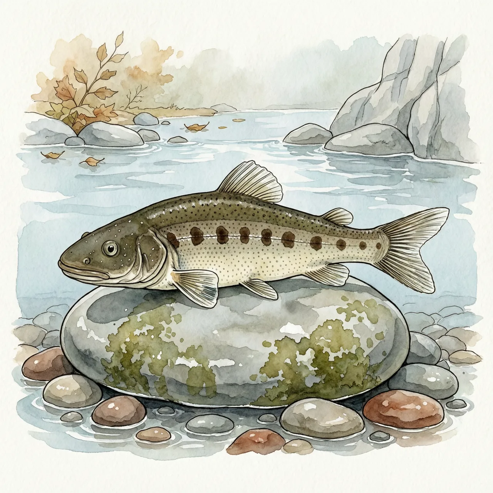
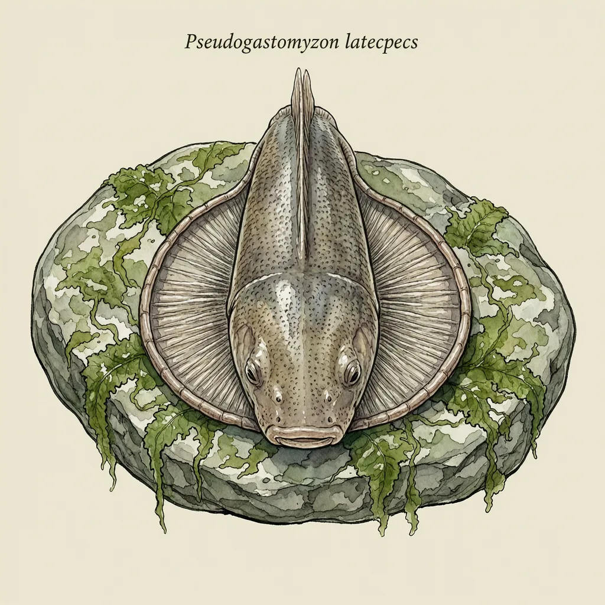

宽头拟腹吸鳅是中国广东海丰县莲花山山溪的特有鱼类。头和身体前段宽扁，胸鳍腹鳍与腹部合成一个吸盘，贴在急流里的溪石上，刮食石面藻类。它的已知分布窄到只有几条独流入南海的小溪；上游一截水被引走，河床变干，鱼就没了去处。IUCN 列为近危。
山溪浅得能看清每一颗砾石。水从广东海丰县的莲花山上淌下来，不进任何大江，自己一路汇进南海。宽头拟腹吸鳅就住在这种溪里，它的模式产地正是海丰县莲花山山溪，目前已知分布也集中在这一带。水浅、流急、水温偏低，河底是岩面和卵石，没有淤泥。这种水体的麻烦在于水一刻不停地走，任何没把自己固定住的东西都会被顺流冲下去。
宽头拟腹吸鳅的脑袋和身体前段都宽而扁，像被从上面压平过。胸鳍与腹鳍向后铺开，和腹部一起围成一个吸盘状结构，贴住溪石的表面。急流从它背上掠过，把它往石头上压，而不是冲走。它就在这块石头上进食，刮食石面附着的藻类，不必追猎，也不必在流水里持续游动。水流越急，这张由身体前段做成的吸盘越管用。
容易以为分布窄的鱼是被捕捞弄少的。宽头拟腹吸鳅的处境更安静：它全部的已知家当，就是莲花山那几条独流入海的小溪。上游拦一道坝、引走一截水，下面那段河床露出来，这一处就断了；它过不了陆地，也回不到别的水系。IUCN 给它的等级是近危，对应的正是这种格局，不是数量慢慢往下走，而是范围本来就小到几处断流就能摊平。石头还在原地，藻照样贴着石面长。
